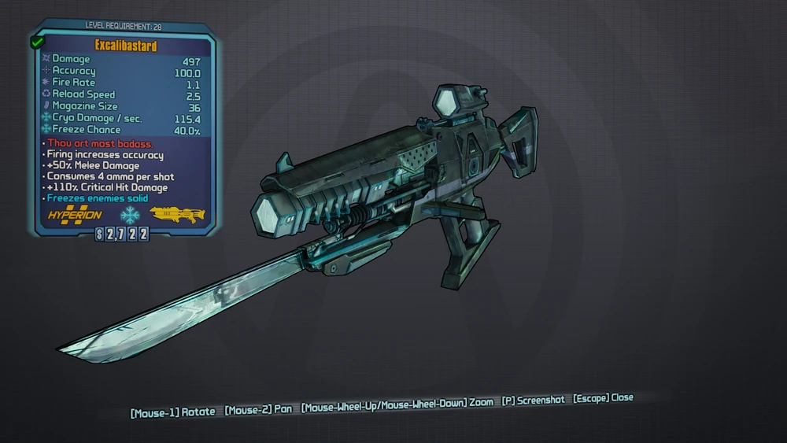
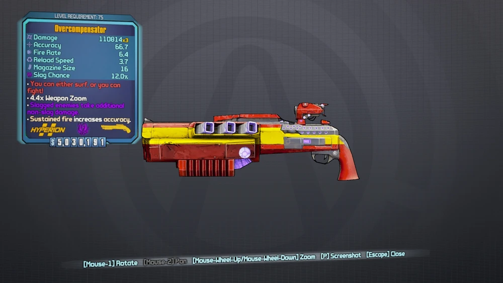
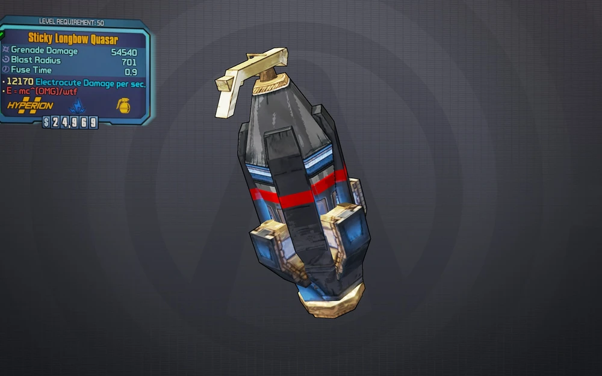
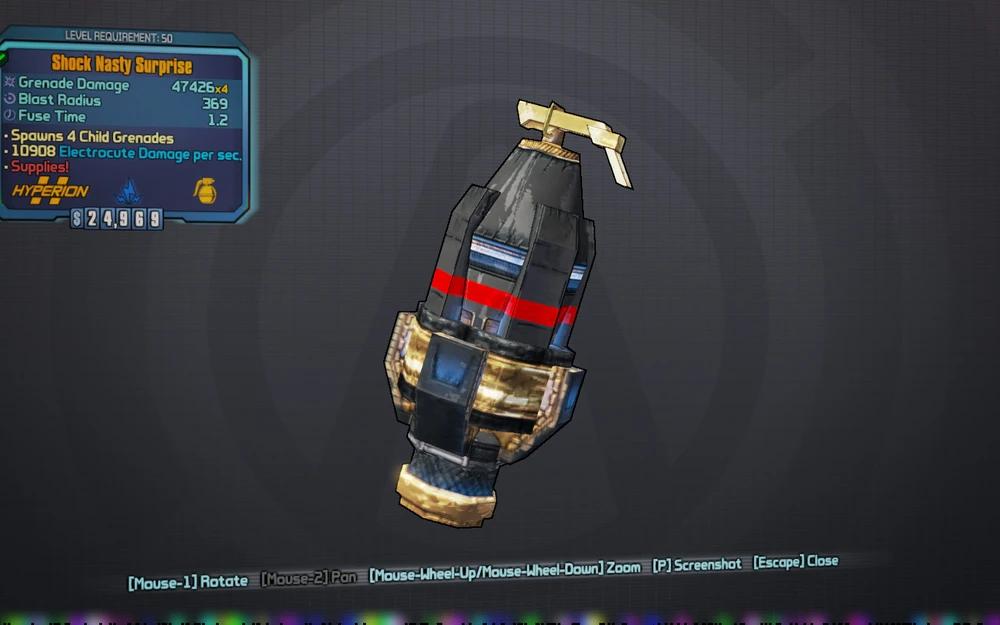
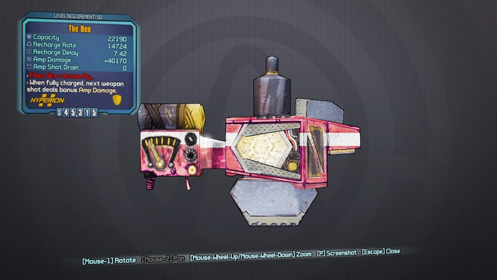
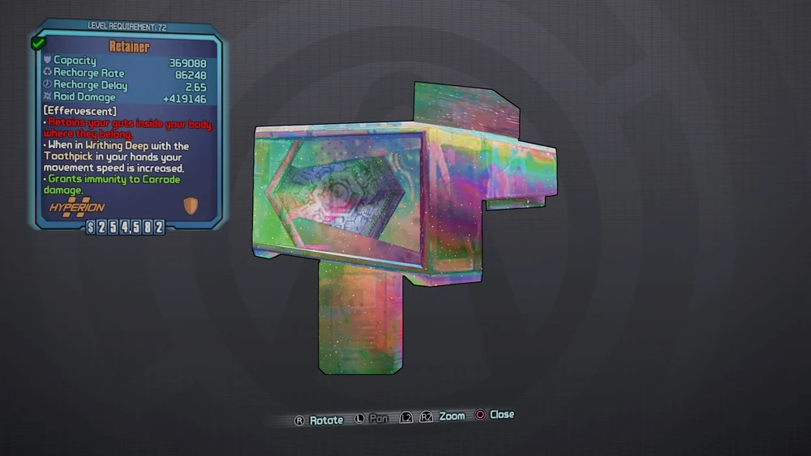
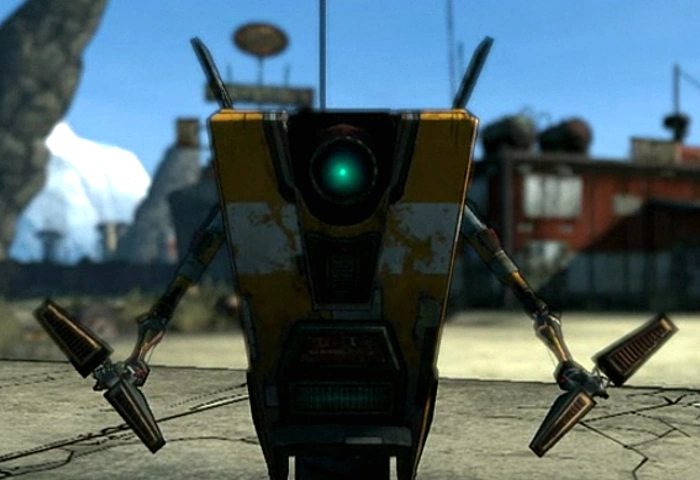
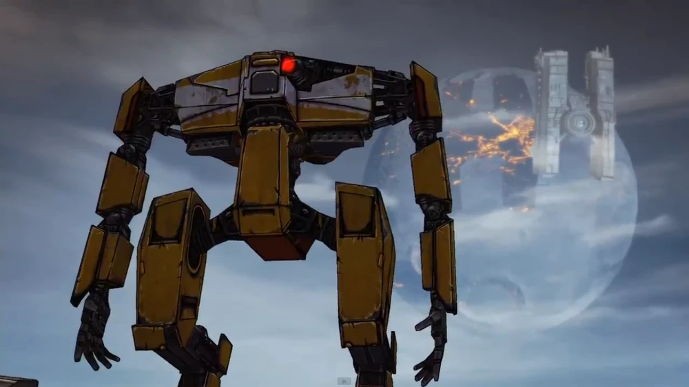
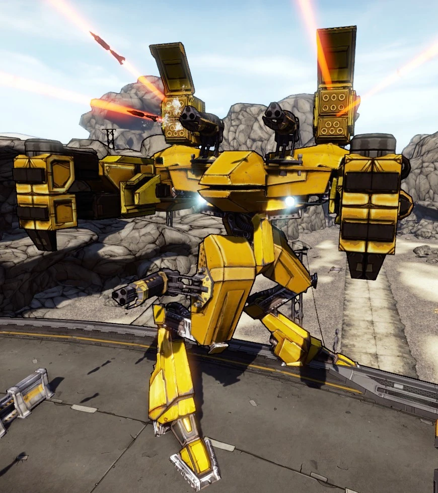
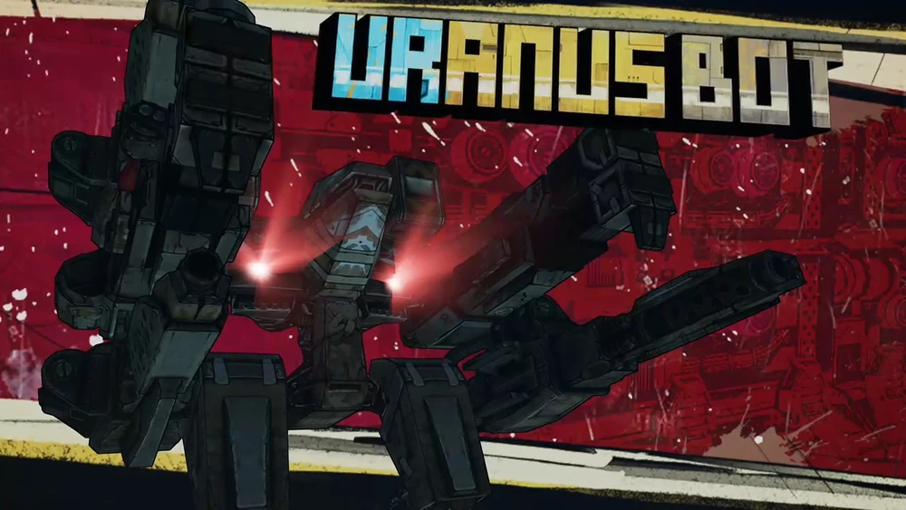

Excalibastard
Overcompensator
Quasar
Nasty Surprise
The Bee
Retainer
CL4P-TPs
Lawrence De Quidt founded Hyperion's artificial intelligence branch, prototyping the CL4P-TP robots. In his later years, De Quidt dedicated his life to correcting personality flaws in the early prototypes for the CL4P-TP steward bots but died before he could do so.
Loader Bots
These robots are the meat and potatoes of the Hyperion army and the brunt of the actual horsepower behind the labor that goes into the marvels of Opportunity and Helios Station. Before Handsome Jack came to power, robotics were becoming passé in Hyperion and thought to be more trouble than it was worth, based on the generally fastidious and difficult nature of the Claptrap robot series. One of the first things Jack did was refocus the corporation on its robotic line by destroying almost all Claptrap units and taking the program in a new direction of modular robotics, utilizing numerous new models based on relatively similar shells and parts.
Saturn
Saturn is very robust and has several devastating attacks. It has four mounted turrets, one on each shoulder and one on each leg, which can be shot off. The turrets can be used for second winds. Saturn has no critical points, is immune to all elemental status effects, and is highly resistant to splash damage.
Uranus
Uranus is nearly identical to Saturn, featuring a similar appearance with turrets on its 'shoulders' and 'hips,' and sharing the same elemental vulnerabilities. However, several of its attacks are different and it also features an additional two autocannons similar to those found on WAR Loaders.